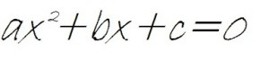
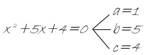

las ecuaciones de segundo grado completas o ecuaciones cuadráticas son las que se representan de la siguiente forma: Donde a, b y c son las constantes de la ecuación:
a es el número que va siempre delante de x al cuadrado. b es el número que va siempre delante de la x. c es el número. Es decir, las ecuaciones de segundo grado completas son las que tienen término con x elevada a 2, término con x elevada a 1 (o simplemente la x). Si faltara alguno de estos términos, estaríamos hablando de ecuaciones de segundo grado incompletas, que se resuelven con otro procedimiento distinto. Al ser ecuaciones de segundo grado, tienen 2 soluciones. Recuerda que el grado de una ecuación es igual al número de soluciones.
El primer paso para resolver ecuaciones de segundo grado completas es identificar las constantes correctamente. Como hemos dicho antes, las constantes son los números que van delante de x al cuadrado, x y el término que no lleva x. Vamos a verlo en un ejemplo:

Si falta algun temino lo tomamos como un 0 y estas ecuaciones pueden tener 2 resultados iguales, distintos o imaginarios.